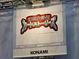
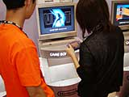
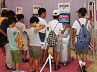
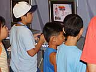

| #10 ゲームボーイアドバンス ライセンシータイトル体験コーナーレポート その２ |
ゲームボーイアドバンス ライセンシータイトル体験コーナーレポート その２ page1 ・・・ page2 |
| ● 幻想水滸伝カードストーリーズ コナミ |
|
 ＲＰＧの人気シリーズ『幻想水滸伝』がカードゲームになりました。ＲＰＧのキャラクターたちが、そのままカードゲームの世界に登場します。元のゲームの世界観も引き継がれていて、雰囲気たっぷり。 体験コーナーでは簡単なカードバトルがプレイできます。バトルが始まると、カードの中のキャラクターが実際に相手のカードと戦ってくれるのです！ ユーモラスなアニメーションで表現されていて、思わず笑みがこぼれてしまいます。モニターの前ではカードゲームファンらしきかたがたが、スゴい集中力でプレイしていました。それぞれのカードのステイタス画面でも、アドバンスの美しいグラフィックを楽しめますよ。 |
| ● ESPN XGames Skateboarding コナミ |
|
 ＸＧａｍｅｓとはディズニーが主催するスケートボード、スノーボード、インラインスケートなどのタイトル・イベント。その正式ライセンスを獲得して作られたのが、『ＥＳＰＮ ＸＧａｍｅｓ Ｓｋａｔｅｂｏａｒｄｉｎｇ』です。スケートボードの様々な競技が、アドバンス上で楽しめるのです。実在の選手を使い、スリリングなプレイを再現します。選手たちの写真入りプロフィールデータは、ファンにとっては絶対貴重！ でも、もちろんスケートボードのことを全然知らない人でも遊べるゲームですよ。 選手たちの爽快な動きに、思わず目をうばわれてしまいます。体験コーナーではお客さんたちが、慎重にキャラクターを操作し、障害物をよけたり、華麗なトリックをキメたりしていました。ジャンプ中の回転も、とってもカンタン。基本のボタン操作を覚えれば、だれでもすぐにカッコいいトリックがキメられるのです。 |
| ● FIELD OF NINE DIGITAL EDITION 2001 コナミ |
|
 注目のプロ野球カードゲームがアドバンスに登場です。ゲームモードで試合に勝ち、カードをもらって自分のデッキを作っていきます。登場するのはすべて実在の選手たち。もちろん、今年のデータです。カードは全部で500種類もあり、集めるだけでも楽しそう。選手のカードと作戦カードを組み合わせて戦います。アドバンスでは、通信対戦も可能です。 コナミＣＳ事業部の中山克洋さんにお話をお聞きしました。「体験コーナーでもデッキを自分で組みかえられますよ。バトルも５回までできます。アドバンスの能力を最大限に引き出したグラフィックも見てください」。選手たちの写真がたっぷり入っているのがうれしい。カードをコレクションする遊び方もありそうです。 |
| ● 友情のビクトリーゴール４Ｖ４嵐（仮称） コナミ |
|
 小学館コロコロコミックで連載中のマンガ『４ｖ４嵐』がゲームになりました。これは、４対４でプレイするサッカーゲーム。シンプルだけど奥が深いのです。ゴールキーパーはいません。選手全員で攻め、守ります。４人の選手がクルクルと自在に動き回り、速い試合展開でサクサク遊べます。 人気マンガのゲーム化だけに、子どもたちの注目も高いよう。体験コーナーでは、グループでワイワイ画面を見ている男の子たちもいました。アドバンスのコンパクトな画面にあわせ、キャラクターも大きめで、フィールドも見やすくなっています。小学生くらいの男の子も、うまくボールを操って次々ゴールをキメていました。普通のサッカーゲームと違って人数が少ないので、スポーツゲームの初心者でもなじみやすいですね。キャラクターを知らない人にも、純粋にゲームとして楽しめる注目作です。 |
ゲームボーイアドバンス ライセンシータイトル体験コーナーレポート その２ page1 ・・・ page2 |
| 前のレポートへ | 次のレポートへ |
|
|